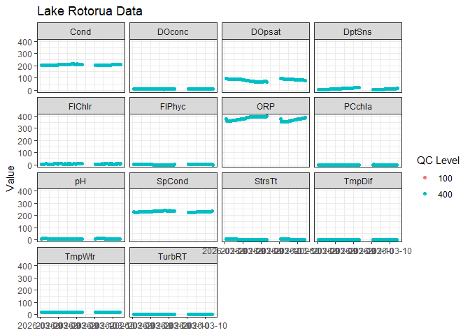

The goal of ltapi is to provide a simple, consistent interface for querying and accessing lake and water quality data from the LimnoTrack database directly from R. It wraps the LimnoTrack PostgREST API, handling authentication, error handling, and response parsing so you can focus on your analysis.
Installation
You can install the development version of ltapi from GitHub with:
# install.packages("pak")
pak::pak("limnotrack/ltapi")Example
A typical workflow starts by exploring what tables are available, inspecting a table’s schema, and then fetching data with optional filters.
Explore available tables
library(ltapi)
# List all available tables in the LimnoTrack database
lt_tables()
#> [1] "aeme_output" "calibration_metadata" "depth_contours"
#> [4] "forecast_ensembles" "forecast_models" "forecast_variables"
#> [7] "function_metadata" "geography_columns" "geometry_columns"
#> [10] "lake_contours" "lake_depth_points" "lake_metadata"
#> [13] "lake_shape_full_84" "lake_shape_light" "lake_shape_light_84"
#> [16] "lernzmp_catchments" "lernzmp_dem" "lernzmp_lakes"
#> [19] "lernzmp_lcdb" "lernzmp_reaches" "lernzmp_subcatchments"
#> [22] "met_data" "parameter_metadata" "raster_columns"
#> [25] "raster_overviews" "sensitivity_metadata" "simulation_metadata"
#> [28] "site_parameters" "sites" "spatial_ref_sys"
#> [31] "system_log" "water_profile" "weather_forecast"Inspect a table schema
Before fetching data it can be useful to check the available columns, their types, and descriptions:
lt_schema("lernzmp_lakes")
#> # A tibble: 15 × 4
#> column type format description
#> <chr> <chr> <chr> <chr>
#> 1 id integer integer <NA>
#> 2 id_final string text <NA>
#> 3 lernzmp_id string text <NA>
#> 4 name_final string text <NA>
#> 5 region string text <NA>
#> 6 gm_type string text <NA>
#> 7 depth_meas boolean boolean <NA>
#> 8 elevation number double precision <NA>
#> 9 z_max number double precision <NA>
#> 10 z_mean number double precision <NA>
#> 11 dv number double precision <NA>
#> 12 v number double precision <NA>
#> 13 source string text <NA>
#> 14 area_ha number double precision <NA>
#> 15 geom string public.geometry(MultiPolygon,2193) <NA>Fetch data
Use lt_fetch() with lt_filter() to query a specific lake:
wq <- lt_fetch(
table = "water_profile",
filter = lt_filter(site_id == "Rotorua"),
order = "datetime.asc",
limit = 1000
)
wq
#> # A tibble: 1,000 × 6
#> site_id datetime parameter value qc_level qc_comment
#> <chr> <dttm> <chr> <dbl> <int> <chr>
#> 1 Rotorua 2026-03-09 21:04:16 Cond 206. 400 ""
#> 2 Rotorua 2026-03-09 21:04:16 DOconc NA 100 ""
#> 3 Rotorua 2026-03-09 21:04:16 DOconc 8.39 400 ""
#> 4 Rotorua 2026-03-09 21:04:16 DOpsat 92.5 400 ""
#> 5 Rotorua 2026-03-09 21:04:16 DptSns 1 400 ""
#> 6 Rotorua 2026-03-09 21:04:16 FlChlr 4.88 400 ""
#> 7 Rotorua 2026-03-09 21:04:16 FlPhyc 3.45 400 ""
#> 8 Rotorua 2026-03-09 21:04:16 ORP 379. 400 ""
#> 9 Rotorua 2026-03-09 21:04:16 PCchla 0.706 400 ""
#> 10 Rotorua 2026-03-09 21:04:16 pH 7.27 400 ""
#> # ℹ 990 more rowsFetch spatial data
Tables with geometry columns are automatically returned as sf objects:
Plot
library(ggplot2)
#> Warning: package 'ggplot2' was built under R version 4.5.3
ggplot(wq, aes(x = datetime, y = value, colour = factor(qc_level))) +
geom_point() +
facet_wrap(~parameter) +
labs(
title = "Lake Rotorua Data",
x = NULL,
y = "Value",
colour = "QC Level"
) +
scale_x_datetime(date_labels = "%Y-%m-%d") +
theme_bw()
#> Warning: Removed 125 rows containing missing values or values outside the scale range
#> (`geom_point()`).
Filtering
lt_filter() supports standard R comparison operators and translates them into PostgREST query expressions:
# Single condition
lt_fetch("lernzmp_lakes", filter = lt_filter(z_max >= 5), limit = 5)
#> Simple feature collection with 5 features and 14 fields
#> Geometry type: MULTIPOLYGON
#> Dimension: XY
#> Bounding box: xmin: 1755087 ymin: 5414930 xmax: 1795036 ymax: 5440216
#> Projected CRS: NZGD2000 / New Zealand Transverse Mercator 2000
#> z_max source v id depth_meas region area_ha elevation
#> 1 8.719000 LERNZmp 28317807 1 TRUE Wellington 651.795952 1.888864
#> 2 14.428886 <NA> NA 2 TRUE Wellington 10.820019 NA
#> 3 14.804648 <NA> NA 3 TRUE Wellington 21.311029 NA
#> 4 5.329407 <NA> NA 7 FALSE Wellington 9.166009 NA
#> 5 9.622161 <NA> NA 9 TRUE Wellington 10.586849 NA
#> id_final gm_type name_final dv z_mean lernzmp_id
#> 1 LID 1 Shoreline Onoke 1.49103 4.333430 LID1
#> 2 LID 3 Shoreline Kohangapiripiri NA 8.452708 LID3
#> 3 LID 4 Shoreline Kohangatera NA 9.029223 LID4
#> 4 LID 299 Riverine <NA> NA 1.995162 LID299
#> 5 LID 301 Riverine <NA> NA 3.034766 LID301
#> geometry
#> 1 MULTIPOLYGON (((1779244 541...
#> 2 MULTIPOLYGON (((1755299 541...
#> 3 MULTIPOLYGON (((1755868 541...
#> 4 MULTIPOLYGON (((1794634 543...
#> 5 MULTIPOLYGON (((1794257 543...
# Multiple conditions
lt_fetch("lernzmp_lakes", filter = lt_filter(
region == "Bay of Plenty",
z_max >= 50
))
#> Simple feature collection with 6 features and 14 fields
#> Geometry type: MULTIPOLYGON
#> Dimension: XY
#> Bounding box: xmin: 1892203 ymin: 5757318 xmax: 1935670 ymax: 5787533
#> Projected CRS: NZGD2000 / New Zealand Transverse Mercator 2000
#> z_max source v id depth_meas region area_ha elevation
#> 1 89.134 LERNZmp 484880049 633 TRUE Bay of Plenty 1047.4205 318.4144
#> 2 52.100 LERNZmp NA 639 TRUE Bay of Plenty 218.0935 NA
#> 3 101.303 LERNZmp 1207285318 1219 TRUE Bay of Plenty 3373.5409 283.2226
#> 4 84.794 LERNZmp 524435311 1220 TRUE Bay of Plenty 1073.5467 311.2037
#> 5 94.291 LERNZmp 2490510485 1221 TRUE Bay of Plenty 4120.8868 300.7707
#> 6 125.195 LERNZmp 580255331 1222 TRUE Bay of Plenty 903.0982 347.0145
#> id_final gm_type name_final dv z_mean lernzmp_id
#> 1 LID 40102 Volcanic Rotoma 1.553606 46.15969 LID40102
#> 2 LID 40124 Dam Matahina NA 35.95600 LID40124
#> 3 LID 54730 Volcanic Rotoiti 1.057013 35.69286 LID54730
#> 4 LID 54731 Volcanic Okataina 1.720673 48.63426 LID54731
#> 5 LID 54732 Volcanic Tarawera 1.919400 60.32738 LID54732
#> 6 LID 54733 Volcanic Rotomahana 1.532338 63.94700 LID54733
#> geometry
#> 1 MULTIPOLYGON (((1915076 578...
#> 2 MULTIPOLYGON (((1935526 576...
#> 3 MULTIPOLYGON (((1896018 578...
#> 4 MULTIPOLYGON (((1896494 577...
#> 5 MULTIPOLYGON (((1895719 576...
#> 6 MULTIPOLYGON (((1898882 575...
# Set membership
lt_fetch("lake_metadata", filter = lt_filter(
id %in% c("LID40188", "LID40189")
))
#> # A tibble: 2 × 7
#> name id latitude longitude elevation depth area
#> <chr> <chr> <dbl> <dbl> <dbl> <dbl> <int>
#> 1 Rotoehu LID40188 -38.0 177. 303. 22.7 7965248
#> 2 Rotoehu LID40188 -38.0 177. 303. 22.7 7965248
# Null checks
lt_fetch("water_profile", filter = lt_filter(
!is.na(value)
))
#> # A tibble: 1,000 × 6
#> site_id datetime parameter value qc_level qc_comment
#> <chr> <dttm> <chr> <dbl> <int> <chr>
#> 1 Karapiro 2026-03-10 16:35:47 FlChlr 7.49 400 ""
#> 2 Karapiro 2026-03-10 16:35:47 FlChlr_AVG 7.49 400 ""
#> 3 Karapiro 2026-03-10 16:35:47 FlChlr_MED 6.79 400 ""
#> 4 Karapiro 2026-03-10 16:35:47 FlChlr_STDEV 1.43 400 ""
#> 5 Karapiro 2026-03-10 16:35:47 FlPhyc 2.72 400 ""
#> 6 Karapiro 2026-03-10 16:35:47 FlPhyc_AVG 2.72 400 ""
#> 7 Karapiro 2026-03-10 16:35:47 FlPhyc_MED 2.66 400 ""
#> 8 Karapiro 2026-03-10 16:35:47 FlPhyc_STDEV 0.158 400 ""
#> 9 Karapiro 2026-03-10 16:35:47 fDOM_AVG 9.63 400 ""
#> 10 Karapiro 2026-03-10 16:35:47 fDOM_MED 9.64 400 ""
#> # ℹ 990 more rows| Operator | PostgREST equivalent |
|---|---|
== |
eq |
!= |
neq |
> / >=
|
gt / gte
|
< / <=
|
lt / lte
|
%in% |
in |
is.na() / !is.na()
|
is.null / not.is.null
|
Caching
The package caches the API schema in memory for the duration of your R session, so repeated calls to lt_tables(), lt_schema(), or lt_fetch() do not re-download the schema. To force a fresh fetch (e.g. after a database update):